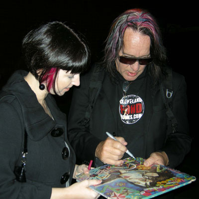
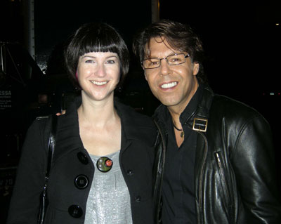

My Signed Todd Rundgren Albums

I have one of the best answers ever to the "What was your first concert?" question.
When I was 13 and 14, I was totally fixated on the music of Todd Rundgren. It started with The Hermit of Mink Hollow, and led to a journey back through his releases in the mid- and early-70s. I remember my mind being completely blown when I discovered that not only did he write all of the songs and lyrics, but he also played every instrument on the album, AND recorded and produced the final product. Could one guy really do all that? In my world at the time, this is the stuff heroes were made of.
But here's the exciting part... right at the peak of my Todd-mania, I was the 7th caller on WMMS (you folks from the Cleveland area may know it as "Home of the Buzzard") and was the big winner of two tickets to see Todd Rundgren & Utopia. But that's not all... I also got BACKSTAGE PASSES!! Not only would I get to see Todd live, I'd get to meet him.
So there I was: my first concert ever, taking in every moment of the show, politely saying "no thank you" to the joints passed my way (Mom's voice, "there could be angel-dust in there!")...all the while gripping my stack of album covers and waiting nervously for my cue to go backstage.
It was a boxy, painted cinder-block room, overly-lit with flourescent lights. Inside the room were a dozen or so radio winners, some slutty-looking girls, and... Todd Rundgren! My hero.
Frankly, he wasn't looking so good. He was covered in post-show sweat and had some sort of scaly skin affliction around his eye. But still, I had two missions: to get my albums signed and to get a kiss on the cheek. For a girl nearly crippled by shyness, this was a herculean task. Knowing this was my big chance, I took a deep breath, and stepped forward.
Todd was very kind, taking the time to write little notes like "To Jennifer, Best Always, Todd" (which you can almost make out in the photo above). I somehow mustered the courage to request a kiss, although I mostly remember trying to strategically dodge that rash.
In the New-Wave and Post-Punk years that followed, being a Todd fan was decidedly un-cool, and I confess to turning my back on him for at least a decade. But recently, I've rediscovered my love for early Todd Rundgren music and I wear it proudly. My albums, signed just for ME by Todd and the rest of the members of Utopia, are a real treasure from my youth.
And is it any wonder that I married a man who can write, perform, and record a whole album...all on his own!
[05.07.02]
Addendum:
I just received this email from my mother, and I thought it warranted posting:
Love ya! Mom
P.S. I was 34 years old then.
2009 UPDATE
Thirty years later...
I went to see Todd perform one of my favorite albums, "A Wizard, A True Star," in Stamford, CT. The show was a lot of fun... the music sounded great and Todd changed costumes at least twelve times, dressing to suit the theme of every song (including an astronaut suit, chef outfit, an oversized child suit, purple druid robe, and many more). I brought along my signed copy of AW,ATS (shown above) along with a quest to get the other side signed. To my great fortune, my Facebook-friend Craig McNeill and his lovely girlfriend Blythe Russo were there and introduced themselves to me. Thanks to their prior experience waiting for Todd and Utopia after shows, their willingness to stand around in the chilly evening, and their general jovial good company, my mission was a success!
Here I am with Todd getting the same album signed, three decades later! And we both have pink hair.

Here I am with Utopia member, Kasim Sultan. I remember he was very sweet to me when I was 14, and he was just as sweet in 2009.
